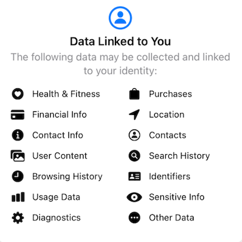
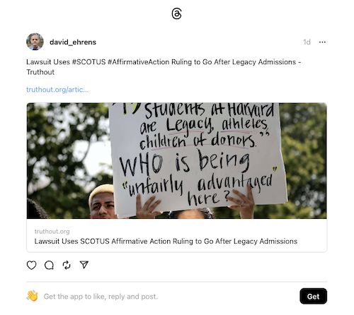
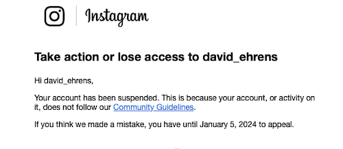
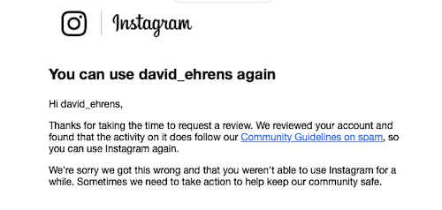
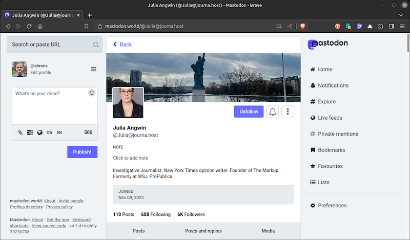

2023-07-09 08:00
Aside from blogging I was never much of a social networking person, mainly because for the most part these platforms are angry places run by sociopathic billionaires who want to steal your personal data. However, I have recently begun to use a few social networks and for the most part they are civilized places that respect my privacy. Recently, several people have asked me about alternatives to Twitter. And Facebook’s founder just announced a social network called Threads. I decided to do a roundup of social networks I’ve tested. The list below focuses on social media for communicating short messages; consequently I didn’t mention Facebook, VKontakt, Telegram, Hive, LinkedIn, Reddit, TikTok, or other social media.
Facebook was launched in 2004, and Twitter followed up two years later as a minimalist social network for posting 140-character messages. By 2023 Twitter had between 250 and 550 million users, while Facebook had nearly 3 billion users and its media-centric network, Instagram, had 2 billion.
In 2022 Elon Musk bought Twitter and set about almost immediately making it inhospitable for 3rd-party developers, anonymous readers, and even his own users whom he tried to gouge with monthly charges and verification fees. Adding injury to insult, Musk welcomed back Nazis, gay-bashers, and racists who had been banned, and Twitter quickly went from already-bad to worse.
As a result, Musks’s users have been defecting in droves to alternate social media sites like Mastodon, BlueSky, Post, Substack Notes, Spoutible, and Spill. And now Threads.
By now everyone knows that Meta (Facebook, Instagram, Whatsapp) just launched a Twitter competitor called Threads. Threads leverages Meta’s Instagram platform (and its two billion users) and within 48 hours Threads had attracted 70 million users.
Because of its rapid adoption, as well as the realization that Elon Musk is rapidly destroying his own vanity project, some are calling Threads a Twitter-killer. While that remains to be seen, Threads has enormous potential because Threads is literally built on top of Instagram and leverages Instagram’s 2 billion users.
I have been experimenting with Threads. It’s still pretty primitive. Since you can’t use Threads without an instagram account, you also can’t cancel your Threads account without deleting your Instagram account. Unlike Instagram, there is also no way to use Threads in a web browser. What you see in your feed is (rather annoyingly) determined by a Meta algorithm, not by you, and it seems half-finished in comparison to three other apps (Mastodon, Post, and Spoutible) I have been testing.
Commercial social media networks embody the adage: “if you’re not the customer, then you’re the product.” In other words, your data is the source of their profits. And the Threads app (like all Meta products) wants pretty much all your data. You can find a comparison of data collection practices of top social networks here.

Julia Angwin, who is both a keen observer of social media as well as an online privacy fanatic, wrote (on Mastodon), “Joined Threads but immediately regretting it. [Wired link].” A light-hearted faux advertisement poked fun at Thread’s privacy issues, which are serious enough that they will prevent Threads from being rolled out in the EU until it finally complies with European privacy laws.
Since I had never used Instagram before, I set up a new account, providing them with my email address and cell phone address. I used my real name and added a current photo of myself to my profile. I made one test post:

The next day I added some more contacts and received a surprising message:

I appealed their algorithm’s “decision” in the Zuckerberg Court of Appeals, and I prevailed:

I don’t have these sort of problems on other social networks. Overall, between the privacy risks, the lack of features, and the aggravations of dealing with an evil monopoly, I simply can’t recommend Threads.
But I’m sure people are going to love it because all their friends will be there.
Mastodon is a federated (clustered) network, distributed over thousands of privately-owned instances (servers). It has between 4 and 5 million users. Mastodon distinguishes between a local and a federated (global) feed. Another feed consists of all the people you follow, regardless of which instance they’re on. On Mastodon a Tweet is called a Toot. I have not found any reason to care which instance I’m on because I can follow people anywhere. And because Mastodon has been around since 2016 there are a surprising number of writers, journalists, and political commentators on the platform. But it’s not a place to follow your favorite actress or hockey player.

Besides Mastodon’s web interface, you can also choose between a large number of apps to use with it. On iOS alone you will find: the official client, Mastodon; Ivory, Ice Cubes; Mammoth; Metatext; Tooot; Tootle; Mona; Radiant; Toot!; Mastoot; Wooly; Trunks; Tusker; Mast; Manny; and Feather.
Mastodon, silly name notwithstanding, is still the most democratic and privacy-conscious platform today. However, at the moment it lacks encrypted DM’s (direct messages), a feature supposedly in development.
BlueSky is the brainchild of Jack Dorsey, who created Twitter and has much the same political views as Elon Musk. I can’t tell you much about it because I am still waiting for an invitation to join. BlueSky is still in very early stages, although mobile apps are available. Users who have experienced the site say it’s less toxic than Twitter. However, given Dorsey’s politics and his reticence to moderate right-wingers, it probably won’t be long before BlueSky follows Twitter’s path. Let’s not forget that Twitter under Dorsey was a MAGA paradise even before he sold it to Elon Musk.
Post has a nice design and has focused on recruiting journalists and writers to its platform. Post’s monetization scheme is based on selling journalistic content for points, although you don’t have to use points for most interactions. Post offers an app, although at present it is very basic. Post has fewer privacy risks than Twitter or any of Meta’s products. Post is a great place to have informed and civilized discussions since there is a notable absence of unhinged haters on the platform.
Substack is a great blogging platform and there are many excellent blogs on the platform. By the same token, since Substack is politically neutral, there are also many you might not care to read, depending on your taste and politics. Substack makes its money by sharing profits with authors of monetized content. However, many blogs do not enable the monetization feature. While Substack has always offered commenting on individual posts, it now offers the ability for Substack subscribers to post messages for all Substack content creators using a new feature called Notes. I have posted a few Notes but have not found the feature to be all that useful. Bloggers would actually find it more useful for Substack to provide hooks to re-post content to other social media.
Like Elon Musk, Spoutible’s founder Christopher Bouzy is a cantankerous guy who picks fights with his critics. Spoutible is in early stages of development, but has a beautiful design and its community is friendly. And Bouzy has promised to keep it that way, as well as moderating any kind of content of a remotely sexual nature. There is presently no app, so I don’t know what its privacy risks are, but I commend Spoutible for their encrypted DM’s (direct messaging). Mobile apps for Android and iOS are reported to be coming out this month.
Another interesting alternative that has popped up is Spill, sometimes described as Black Twitter. Spill is the creation of Alphonzo “Phonz” Terrell and DeVaris Brown, two young Twitter veterans. Spill’s user interface is unlike any other, and its terminology is different as well. The app uses spill for post, sipping for following, and serving for being followed. Fresh Tea is a live feed from everywhere, while My Brew is a feed of everyone you’re sipping. Because the app’s conventions are unique, I initially had difficulties getting around but ultimately I got the hang of it.
Spill is still a work in progress. For example, it’s impossible to paste text plus a URL into Spill, which many people do when commenting on an online article. I found I could only enter the text and URL separately, which is rather cumbersome. Perhaps this is by design, but the result is that most spills are short thoughts or observations. There is also no web app at the moment, which the developers promise to rectify shortly.
The vibe on Spill is quite different from other social networks. Black vernacular is the lingua franca on Spill. Many of the users are well-known Black journalists, authors, professors, and social activists, but you might not even know it because frequently these self-aggrandizing details are not mentioned in the profiles (although it’s possible). Rather than exploiting the opportunity to network professionally, Spill is clearly a more personal, safe, Black space where folks are just sharing their thoughts and feelings in ways that are most comfortable and fun.